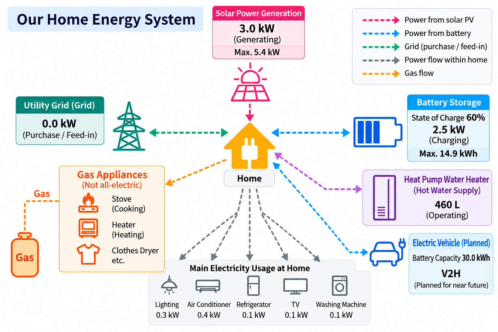

We depend heavily on fossil fuels in our everyday lives. If the flow of oil is disrupted by events such as conflicts around the Strait of Hormuz or oil crises, our lives, industries and economies can be severely affected. Are there alternative ways to secure our energy supply?
Here, I would like to share the reality of solar power generation in one ordinary household. I hope this account will be useful both to those who have already installed solar panels and to those considering doing so.
Our family of four lives in a second-hand, four-bedroom detached house in Funabashi, Chiba Prefecture, Japan. The house sits slightly above street level, up a short flight of steps. Although its roof faces southwest, it receives plenty of sunlight. The roof shape is not necessarily ideal for solar panels, but we have installed 17 panels with a total rated capacity of 5.425 kW. In addition to the solar panels, we have installed a 14.9 kWh stationary battery and a 460 L EcoCute heat pump water heater. We also plan to introduce an electric vehicle (EV) and a vehicle-to-home (V2H) system in the near future. Our home is not fully electric: because we prefer cooking with a flame, we still use gas for the stove, space heating and clothes dryer.
The diagram below shows our home energy system.

1. Electricity Consumption Before Installing Solar Panels
Our average annual electricity consumption was approximately 4,500 kWh, costing about ¥170,000. That works out to a monthly average of 375 kWh (around ¥14,000). In summer, air conditioning increases our electricity use, which reaches about 650 kWh (approximately ¥22,000) in August.
2. Gas Bills Before Installing EcoCute
Our average annual gas bill was approximately ¥140,000, or about ¥12,000 per month. In winter, gas heating pushes the bill higher, exceeding ¥23,000 in January.
3. Our Car Use Before Switching to an EV
We own a tall, box-shaped Japanese kei car (a compact vehicle category), but we do not drive very often. Over seven years, we have covered only about 20,000 km. We mainly use the car for local shopping trips or visits to restaurants. We travel by car only a few times a year, usually on journeys involving around four hours of driving in total.
4. Electricity Use After Installing Solar Panels and EcoCute
Installing EcoCute reduces our gas bill but increases our electricity consumption. Our electricity tariff does not offer discounted night-time rates, so there is no tariff-related advantage to heating water overnight. Instead, it is more economical to heat water directly using daytime solar power, while also benefiting from the heat pump's improved efficiency when the outdoor air is warmer. Early mornings and evenings are periods of relatively high electricity demand, when solar panels alone cannot provide enough power. Using the battery as a buffer to meet demand during these hours is therefore extremely effective. Battery manufacturers provide apps for monitoring electricity flows, but I developed my own monitoring system so that I could customise it freely. Below are examples of our daily electricity flows.
Sunny Day (October)

On sunny days, the battery reaches a 100% state of charge, and any further surplus electricity is exported to the grid. However, feed-in tariffs are lower than they used to be, making electricity sales less financially attractive. On rainy days, meanwhile, solar generation drops sharply—with rather disappointing results.
Rainy Day (October)

One possible solution is to increase storage capacity so that more surplus electricity can be kept rather than exported, helping cover electricity demand on rainy days. This leads naturally to another idea: an electric vehicle, which can serve both as transportation and as a mobile battery.
5. Benefits of Introducing an Electric Vehicle
Today, an EV is more than simply a car that runs on electricity rather than petrol. As described above, when our stationary battery is fully charged on a sunny day, surplus solar power can be stored in a "battery on wheels"—an electric vehicle. With a V2H (Vehicle to Home) system, electricity can also flow from the car back into the house during rainy weather or emergencies. Once we introduce an EV, I would like to experiment with how effectively it can serve not only as a short-term buffer for rainy days, but also as a longer-term reserve during summer or winter periods when solar generation is insufficient.
As mentioned earlier, most of our driving involves short trips around town. Conventional petrol cars generally achieve better fuel economy during steady-speed driving, such as on motorways, whereas EVs can sometimes achieve better energy efficiency in urban driving than at high speeds. One fascinating reason is regenerative braking, which recovers some of the vehicle's kinetic energy as electricity during deceleration. Our current kei car achieves a real-world urban fuel economy of approximately 14–15 km/L. With a 27 L fuel tank, its theoretical urban range on a full tank is about 380–400 km. Recently, some electric kei cars with battery capacities of around 30 kWh have become capable of travelling more than 300 km. For predominantly urban use, the range on a full charge is approaching that of a petrol car on a full tank. Filling a petrol kei car costs just under ¥4,000, whereas charging an electric kei car at home using purchased electricity costs around ¥1,000. If we can fully charge it using surplus solar electricity, there is no additional cost for electricity purchased from the grid.
6. Installation Costs and Payback Period
Those considering these technologies may understandably wonder whether the initial investment will pay for itself. I have chosen not to disclose our specific installation costs, since prices vary considerably among solar installers and equipment configurations. However, estimates of potential solar generation and installation costs, as well as consultations about eligibility for demand response (DR) subsidies, are often available free of charge. I hope our generation and consumption data will help readers estimate their own payback periods.
Predicting the future is difficult, especially when equipment ageing and other uncertainties are taken into account. Nevertheless, I expect our household to save more than ¥200,000 per year in energy costs, and my goal is to recover the initial investment within approximately 10–15 years.
In any case, I regard our investment in solar panels, EcoCute and an EV less as a way to maximise personal financial gain and more as an investment in a hobby. Simply watching the weather forecast, observing how solar generation changes and pursuing the optimisation of our energy costs is enjoyable enough for me.
Conclusion
Solar power is evolving not merely as an expression of ideals such as the Sustainable Development Goals (SDGs), but also as a rational and economically viable option. Challenges remain, including environmental impacts and human rights concerns associated with manufacturing. Even so, I believe it makes good sense to explore the use of renewable energy.
Beyond solar power, offshore wind, small-scale hydropower, tidal-current energy and geothermal power all have considerable room for further development. Japan is an earthquake-prone island nation surrounded by the sea. Yet its geological activity also provides geothermal resources; its mountainous terrain creates flowing rivers; and the surrounding ocean offers further possibilities. Seen this way, Japan may have enormous potential for renewable energy.
Since installing solar panels, I often find myself thinking, "Have I really been letting all this precious energy go to waste until now?" Since introducing solar power, our electricity purchases from the grid have fallen to almost zero. Previously, we were not only failing to make use of available solar energy but also consuming precious fossil fuels.
To leave even a little more of those valuable fossil fuels for future generations, why not become an Energy Rich Man yourself—and be one of the beautiful people!